Process technology for the finishing line.
Developed by Italtecno Srl in Modena and applied at a number of coaters and anodizers with excellent results — colouring, acid recovery, dosing, rectifiers and the tools in between.
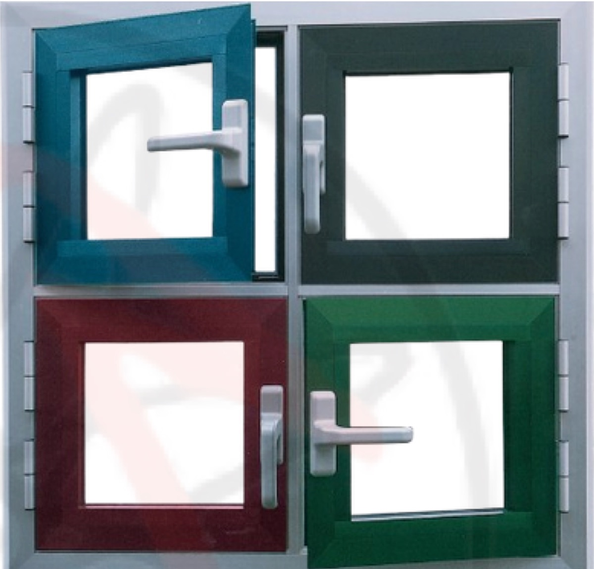
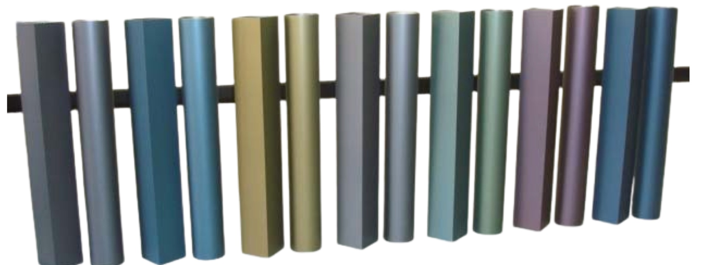
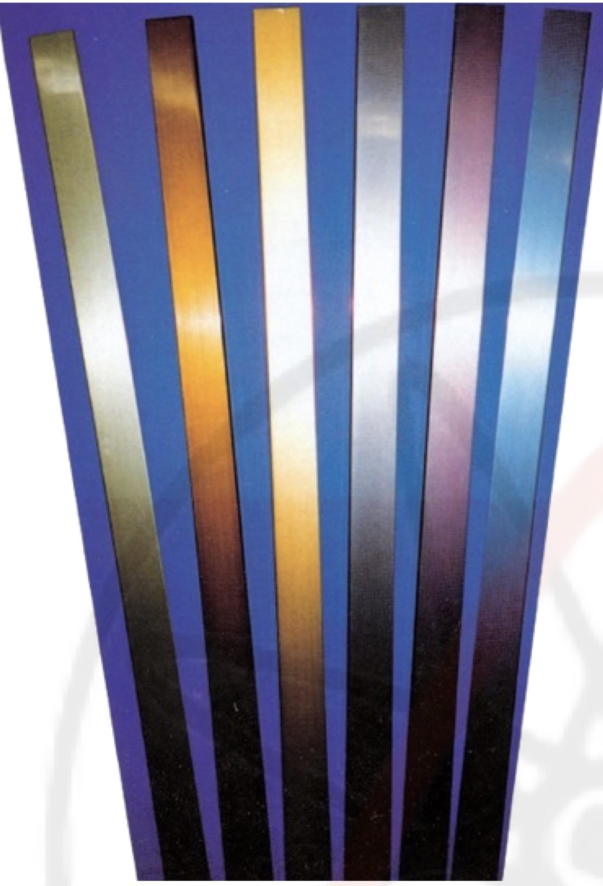
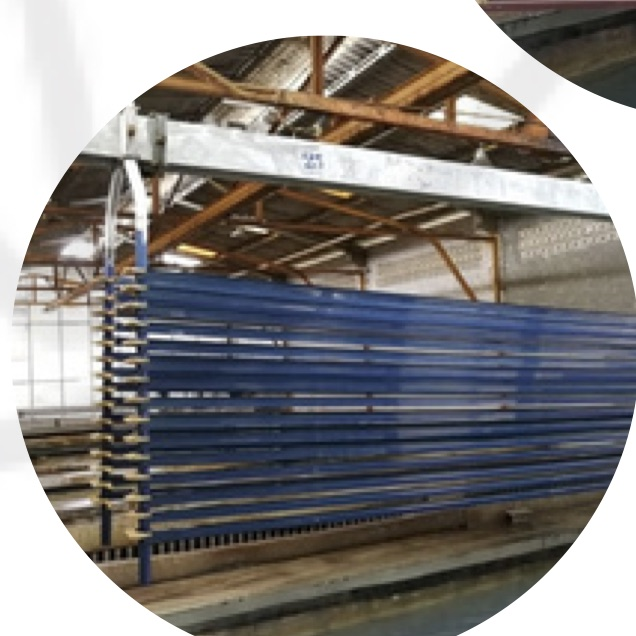
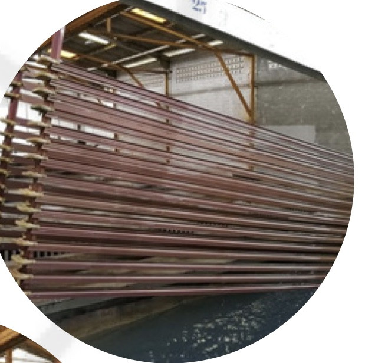
Multicolor — grey, blue, green and many other colours.
Multicolor is a revolutionary electrocolouring process capable of producing a range of colours from grey, blue and green. The process involves a three-step procedure and extends the classic bronze-to-black palette into shades that were previously out of reach for electrolytic colouring.
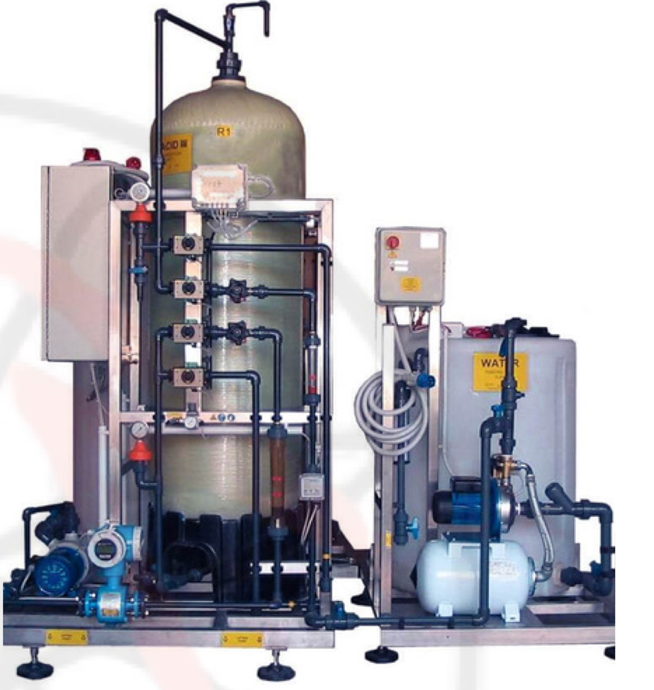
FREEAL Plus — fully automatic control of aluminium concentration.
FREEAL is a unique technology designed to improve the efficiency of anodizing baths as well as of different types of acid pickling processes.
It is designed with the aim to maintain the aluminium content in the solution at a constant desired level. This is achieved by drawing quantities of the acid solution from the process bath into the FREEAL system, purifying it and delivering it back to the bath.
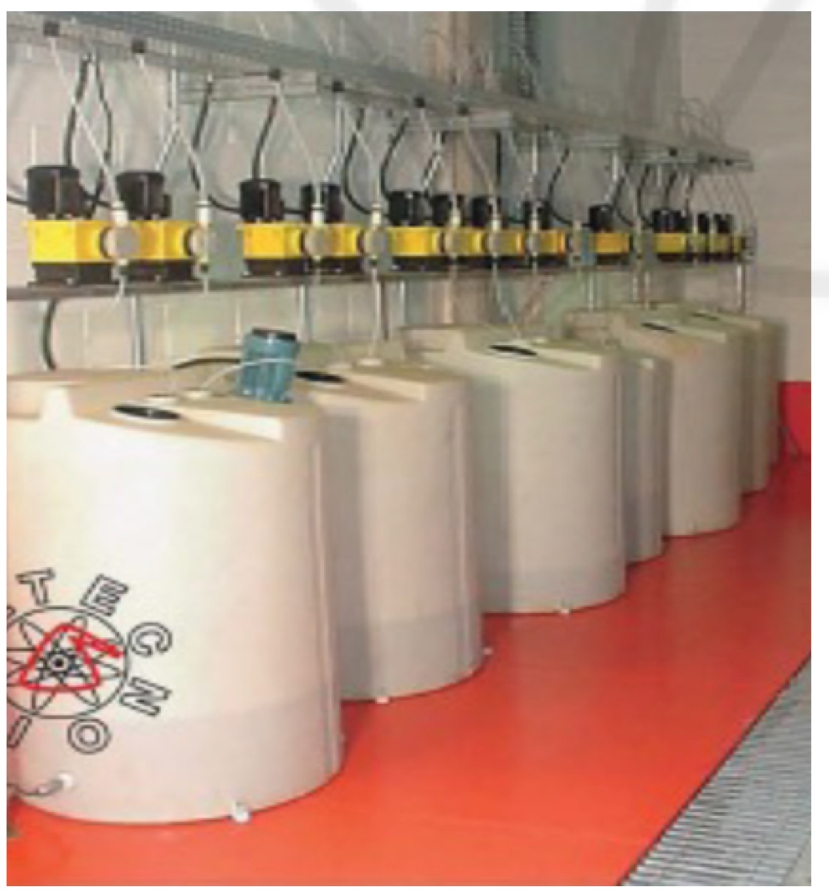
ADC dosing system.
Italtecno Srl, listening to the needs of its customers, has developed an appropriate system that allows the automation of the addition of chemicals to the main chemical treatment tanks — the so-called ACD, automatic chemical dosing.
Where the ACD device applies
- Electrostatic coating plants (powder or liquid) of aluminium and steel
- Aluminium anodizing
- Waste water treatment plants for the above production processes
Italtecno Srl has applied the above technology to a number of coaters and anodizers with excellent results.
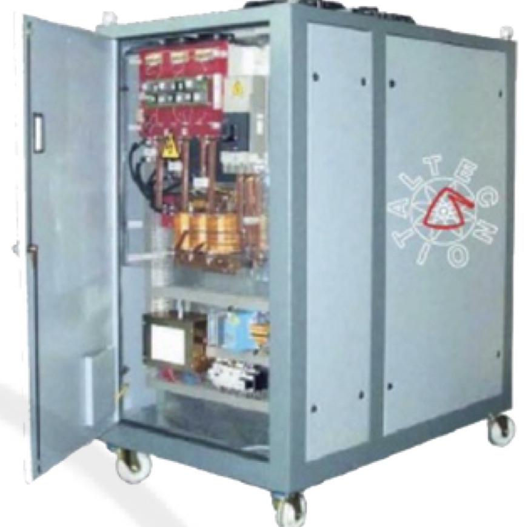
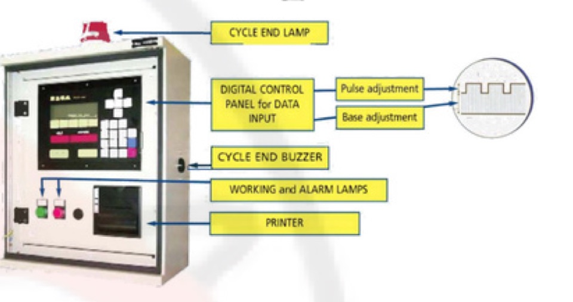
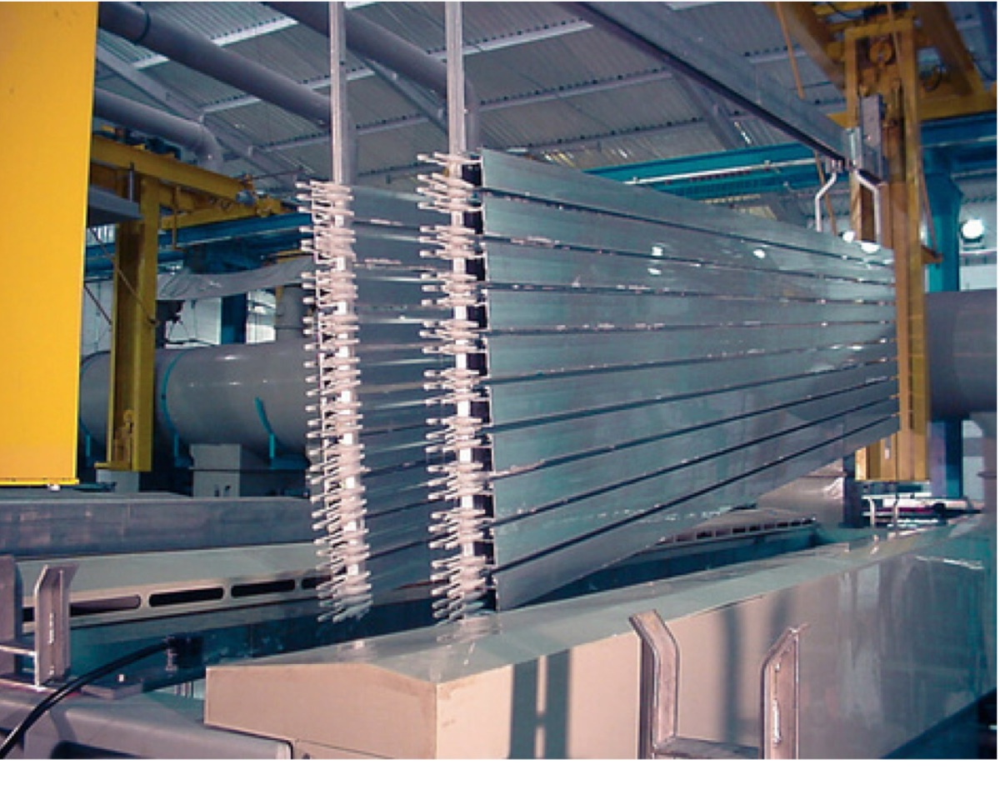
Pulse rectifier — better oxide, 20–25% faster.
With the use of pulse rectifiers, the oxide quality is better than the one obtained with a conventional rectifier, as proved by the tests on abrasion, efficiency (ISO 3210) and corrosion (Kesternich).
So it is possible — without disadvantages — to work with a current density higher than conventional rectifiers. The use of pulse rectifiers therefore gives a benefit of 20–25% time saving compared with conventional ones.
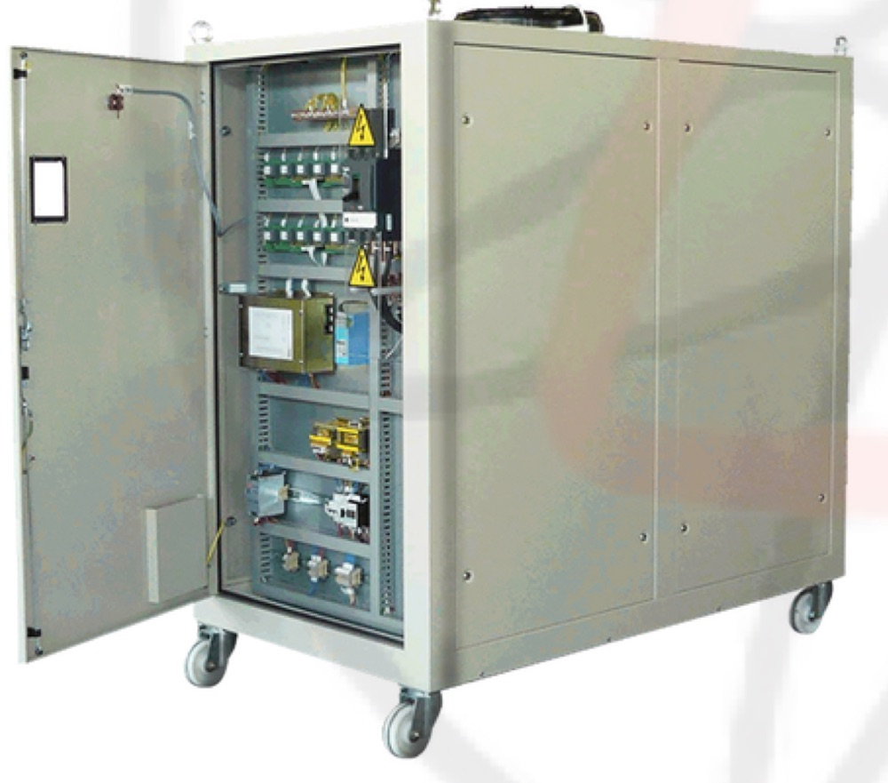
Tecno 7S — a new generation for aluminium colouring.
Power supply for conventional electrocolouring and for special processes. The new power supply for electrocolouring delivers improved uniformity, throwing power and colouring speed.
It is a completely static unit — no movable parts, three-phase supply — and a computerized power supply.
The small parts that keep the line moving.
The new pliers and clamps have been studied for better ergonomics for technicians and for a better hook and release. The electrical contact between profiles and racks is also improved.
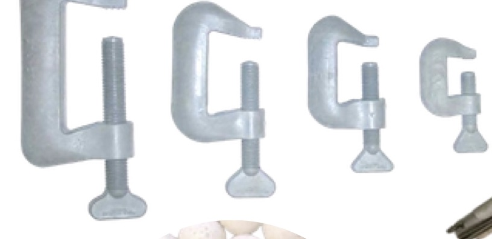
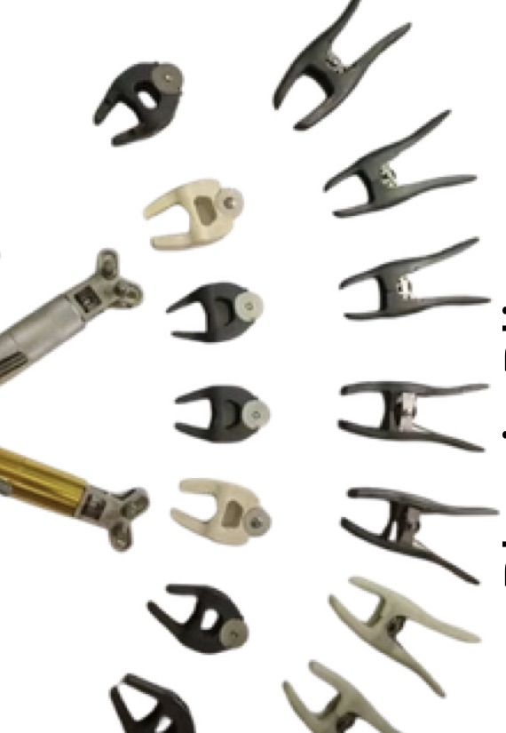
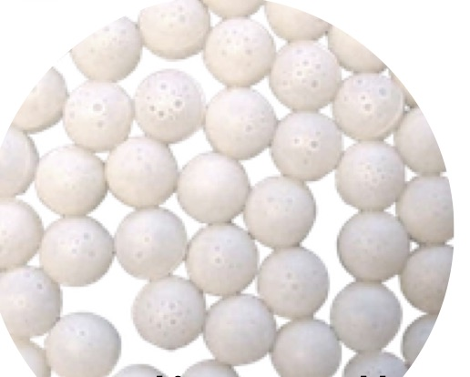
Want to see the numbers for your bath?
Send us your tank volumes, current densities and colouring targets and we will size the equipment with you.